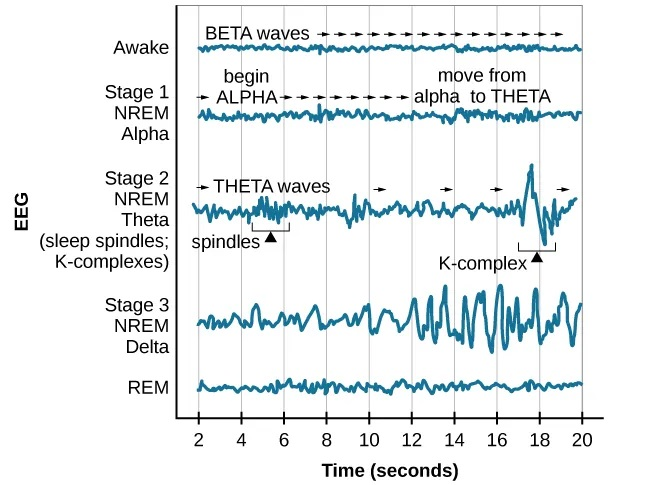

The Big Picture: Mapping the Mind's Shifts
When you think of studying psychology, you might picture analyzing conscious choices, memories, or social behaviors. But a huge part of understanding our minds involves looking at what happens when we aren't awake at all. To truly grasp how our brains function, we have to start with the concept of consciousness and explore how our bodies cycle through different states of rest every single day.
Let's look at exactly how your brain manages the night shift.
1.The Levels of Awareness
Before jumping straight into sleep cycles, we need to talk about the overarching umbrella: consciousness. Consciousness is a person’s awareness of themselves and their environment, including thoughts, feelings, sensations, and perceptions at any given moment. It isn't a simple on/off switch; it exists in varying levels throughout the day. Sleep represents a naturally recurring state of rest characterized by reduced consciousness, slowed bodily functions, and brain activity that supports restoration, memory consolidation, and overall health.
Our Internal Clock
Your body naturally tracks time using a system that aligns with the planet's rotation. This is governed by your Circadian Rhythm, the internal biological clock that regulates the sleep-wake cycle and other physiological processes on a roughly 24-hour schedule. When our modern schedules or travel plans conflict with this built-in clock, we experience real physiological friction. For example, Jet Lag causes fatigue and sleep disturbance resulting from the disruption of the body's normal circadian rhythm following long flights through different time zones. Your watch updates instantly, but your internal cellular timing takes days to catch up. Similarly, Shift Work schedules that take place outside the traditional 9-to-5 day can severely disrupt circadian rhythms and sleep patterns, heavily impacting how alert you feel when you are awake.
2.Riding the Waves: The Stages of Sleep
When you drift off, your brain doesn't just turn off. Instead, it moves through a series of predictable stages, each identified by its own unique electroencephalogram (EEG) pattern.
Falling Asleep and Light Sleep (NREM)
Your journey into the night begins with non-REM (NREM) sleep stages, which actually decrease in duration as successive cycles repeat throughout the night. When you are awake but relaxed and calm, your brain produces relatively slow Alpha Waves, which often occur just before falling asleep. As you transition from wakefulness to sleep, you enter NREM stage 1, a very light sleep stage marked by slowed brain activity, muscle relaxation, and slow Theta Waves. During this brief window, you may experience Hypnagogic Sensations: vivid, dreamlike experiences such as falling or seeing flashes of light. This is exactly what causes that sudden physical jerk that snaps you back awake!
If you stay asleep, you progress into NREM stage 2, a deeper stage of light sleep characterized by a slower heart rate and body temperature. In this stage, your brain activity displays Sleep Spindles, which are brief bursts of rapid brain activity believed to play a crucial role in memory consolidation and protecting your sleep from external disturbances.
Deep Sleep and the REM Paradox
Eventually, you descend into NREM stage 3, the deepest stage of non-REM sleep. This stage is defined by the presence of very slow, high-amplitude Delta Waves and is absolutely vital for physical restoration, growth, and recovery. Following deep sleep, the cycle shifts into REM Sleep, an active stage marked by rapid eye movements, vivid dreaming, high brain activity, and temporary muscle paralysis.
REM sleep is often considered paradoxical because its EEG printouts display active brain waves similar to wakefulness, yet the skeletal body remains completely relaxed and immobilized. The frequency of your REM sleep periods increases as your sleep cycle progresses through the night. If you miss out on it, your brain makes note of the debt and forces a REM Rebound. This phenomenon is an increase in REM sleep that occurs after a person is deprived of it, causing the body to spend much more time in REM during subsequent sleep cycles to make up for the loss.

3.Why Do We Sleep and Dream?
Psychologists use distinct theoretical frameworks to explain why we spend a third of our lives in a state of reduced awareness. While scientists don't know exactly why we dream, we have some pretty good theories that help explain what is happening behind the scenes.
The Purpose of Sleep and Dreams
According to the Restoration Theory of Sleep, our nightly downtime serves to repair and rejuvenate the body and brain, helping restore energy, support growth, and maintain overall physical and mental functioning. Alternatively, the Consolidation Theory focuses on cognition, proposing that sleep, especially REM and deep NREM sleep, helps stabilize and strengthen newly formed memories so they can be stored long-term. Think of your brain as a file manager organizing your daily experiences while you rest.
When it comes to the structure of dreams, the Activation-Synthesis Theory suggests that dreams are simply the brain's attempt to make sense of random neural activity occurring during sleep. Under this model, your brainstem fires random signals during REM, and your higher brain regions synthesize those electrical sparks into a cohesive story.
🔍 What’s on the Exam? According to the official exclusion statements in the CED, psychoanalytic dream theories (like Sigmund Freud's ideas on hidden meanings, latent content, and manifest content) are completely outside the scope of the exam. Keep your focus on biological and cognitive perspectives like activation-synthesis and consolidation!
4.Disruptions of the Night: Sleep Disorders
When healthy sleep patterns break down, it can seriously compromise physical health and daytime cognitive performance. The curriculum focuses on a specific set of clinical conditions. Insomnia is a common sleep disorder characterized by persistent difficulty falling asleep, staying asleep, or getting restful sleep despite having adequate opportunity to do so. Conversely, Narcolepsy involves sudden, uncontrollable sleep attacks during waking hours, often including rapid entry into REM sleep and a possible loss of muscle control. Sleep Apnea is a dangerous condition marked by temporary cessations of breathing during sleep and repeated momentary awakenings, which often leaves individuals completely exhausted during the day.
Other disorders involve unusual physical movement during the night. REM Sleep Behavior Disorder occurs when the normal muscle paralysis of REM sleep is absent, causing a person to physically act out their dreams, sometimes violently. This heavily contrasts with Somnambulism (sleepwalking), a disorder in which a person walks or performs other complex behaviors while still asleep, usually during deep NREM Stage 3 sleep, with little or no memory of the event. Finally, Night Terrors involve sudden episodes of intense fear, screaming, and high arousal during deep NREM sleep, typically leaving little to no recall of the event upon waking.
5.Don't Trip Up! (Common Misconceptions)
⚠️ Nightmares vs. Night Terrors: Students often mix these up on multiple-choice questions. Nightmares are vivid, scary dreams that occur during REM sleep, meaning you can usually remember them when you wake up. Night Terrors occur during deep NREM Stage 3 sleep, involve intense physical panic (like screaming or sweating), and leave almost no memory trace behind.
⚠️ Sleepwalking vs. REM Behavior Disorder: Since sleepwalkers are moving around, it is easy to assume they are acting out a dream. They aren't! Somnambulism happens during deep NREM Stage 3 sleep when the motor cortex is active but dreams aren't actively happening. Physically acting out a vivid dream because of a failure in protective muscle paralysis is specifically classified as REM Behavior Disorder.
6.Key Terms in This Topic
7.Practice This Topic
Test yourself on exactly what you just read, then mix it up with games and puzzles. The numbers on each button show how much material is waiting for you.
The same self-check questions that close your guided notes. Find out whether sleep stages and dreaming stuck.
Start Quick Check →Flip through the key terms from this topic, including REM sleep, the NREM stages, and circadian rhythm.
Open the deck →AP-style multiple choice on sleep stages, theories of dreaming, and sleep disorders, with an explanation after every answer.
Take the quiz →Almost there! Unit 1 is nearly done. Mix it up with games that review the whole unit.